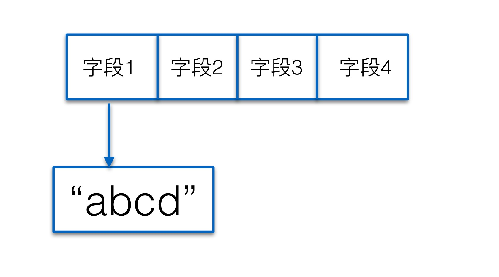

golang 面向对象编程
目录
- struct 声明和定义
- struct 的内存布局以及构造函数
- 匿名字段和 struct 嵌套
- struct 与 tag 应用
- 课后作业
struct 声明和定义
- go 中面向对象是通过 struct 来实现的，struct 是用户自定义的类型
type User struct {
Useraneme string
Sex string
Age int
Avatar string
}注意：
type是用来定义一种类型
- struct 初始化方法
var user User
user.Age = 18
user.Username = "user01"
user.Sex = "男"
user.avatar = "https://www.zhanggaoyuan.com"注意: 使用变量名 + “.” + 字段名访问结构体中的字段
- struct 初始化方法
var user User = User{
Username:"user01",
Age:18,
Sex:"男",
Aratar:"https://www.zhanggaoyuan.com"
}更简单的写法
user := User {
Username:"user01",
Age:18,
Sex:"男",
Aratar:"https://www.zhanggaoyuan.com"
}- struct 初始化的默认值
var user User
fmt.Printf("%#v\n",user)- struct 类型的指针
var user *User = &User{}
fmt.Printf("%p %#v\n",user)var user *User = &User {
Username: "user01",
Age: 18,
Sex: “男”,
Avatar: “http://my.com/xxx.jpg",
}var user User = new(User)
user.Age = 18
user.Username = "user01"
user.Sex = "男"
user.Avatar = "http://my.com/xxx.jpg"注意:&User{}和new(User) 本质上是⼀一样的，都是返回⼀一个
结构体的地址
struct 内存布局
- 结构图的内存布局：占用一段连续的内存空间

- 结构体没有构造函数，必要时需要自己实现
func NewUser(username,sex,aratar string,age int) *User {
return &User{
Username : username,
Age: age,
Sex: sex,
Avatar: aratar,
}
}匿名字段和嵌套
- 匿名字段：即没有名字的字段
type User struct{
Username string
Sex string
Age int
Avarar string
}type User struct {
Username string
Sex string
Age int
Avatar string
int
string
}注意：匿名字段默认采用类型名作为字段名
- 结构体嵌套
type Address struct {
City string
Province string
}type User struct {
Username string
Sex string
Age int
Avatar string
address Address
}- 匿名结构体
type Address struct {
City string
Province string
}type User struct {
Username string
Sex string
Age int
AvatarUrl string
Address
}- 匿名结构体与继承
type Animal struct {
City string
Province string
}type User struct {
Username string
Sex string
Age int
AvatarUrl string
Address
}- 冲突解决
type Address struct {
City string
Province string
CreateTime string
}type Email struct {
Account string
CreateTime string
}type User struct {
Username string
Sex string
Age int
Avatar string
Address
Email
CreateTime string
}结构体与 tag 应用
- 字段可见性，大写表达可公开访问，小写表示私有
type User struct {
Username string
Sex string
Age int
avatar string
CreateTime string
}tag是结构体的元信息，可以在运行的时候通过反射的机制读取出来
type User struct {
Username string `json:"username"`
Sex string `json:"sex"`
Age int `json:"age"`
avatar string
CreateTime string `json:"create_time"`
}字段类型后面，以反括号起来的 key-value 结构图的字符串，多个
tag以逗号隔开
课后练习
- 实现⼀一个简单的学⽣生管理理系统，每个学⽣生有分数、年年级、性别、名字等 字段，⽤用户可以在控制台添加学⽣生、修改学⽣生信息、打印所有学⽣生列列表
的功能。
package main
type Student struct {
Username string
Sex int
Score float32
Grade string
}
func NewStudent(username string, sex int, score float32, grade string) (stu *Student) {
stu = &Student{
Username: username,
Sex: sex,
Score: score,
Grade: grade,
}
return
}package main
import (
"fmt"
)
func main() {
var a, b, c int
var d string
fmt.Scan(&a)
fmt.Scan(&b)
fmt.Scan(&d)
fmt.Scan(&c)
fmt.Println(a, b, c, d)
}package main
import (
"fmt"
"os"
)
var (
AllStudents []*Student
)
func showMenu() {
fmt.Println("1. add student")
fmt.Println("2. modify student")
fmt.Println("3. show all student")
fmt.Println("4. exited\n\n")
}
func inputStudent() *Student {
var (
username string
sex int
grade string
score float32
)
fmt.Println("please input username:")
fmt.Scanf("%s\n", &username)
fmt.Println("please input sex:[0|1]")
fmt.Scanf("%d\n", &sex)
fmt.Println("please input grade:[0-6]")
fmt.Scanf("%s\n", &grade)
fmt.Println("please input score:[0-100]")
fmt.Scanf("%f\n", &score)
stu := NewStudent(username, sex, score, grade)
return stu
}
func AddStudent() {
stu := inputStudent()
for index, v := range AllStudents {
if v.Username == stu.Username {
fmt.Println("user %s success update\n\n", stu.Username)
AllStudents[index] = stu
return
}
}
AllStudents = append(AllStudents, stu)
fmt.Printf("user %s success insert\n\n", stu.Username)
}
func ModifyStudent() {
stu := inputStudent()
for index, v := range AllStudents {
if v.Username == stu.Username {
AllStudents[index] = stu
fmt.Printf("user %s success update\n\n", stu.Username)
return
}
}
fmt.Printf("user %s is not found\n", stu.Username)
}
func ShowAllStudent() {
for _, v := range AllStudents {
fmt.Printf("user:%s info:%#v\n", v.Username, v)
}
fmt.Println()
}
func main() {
for {
showMenu()
var sel int
fmt.Scanf("%d\n", &sel)
switch sel {
case 1:
AddStudent()
case 2:
ModifyStudent()
case 3:
ShowAllStudent()
case 4:
os.Exit(0)
}
}
}对应的 github 地址